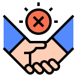
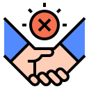

FAQs
What is corona virus?
Corona viruses are a large family of viruses which may cause illness in animals or humans. In humans, several coronaviruses are known to cause respiratory infections ranging from the common cold to more severe diseases such as Middle East Respiratory Syndrome (MERS) and Severe Acute Respiratory Syndrome (SARS). The most recently discovered coronavirus causes coronavirus disease COVID-19.


What is COVID-19?
COVID-19 is the infectious disease caused by the most recently discovered corona virus. This new virus and disease were unknown before the outbreak began in Wuhan, China, in December 2019.
What are the symptoms of COVID-19?
The most common symptoms of COVID-19 are fever, tiredness, and
dry cough. Some patients may have aches and pains, nasal
congestion, runny nose, sore throat or diarrhea. These symptoms are
usually mild and begin gradually. Some people become infected but
don’t develop any symptoms and don't feel unwell. Most people
(about 80%) recover from the disease without needing special
treatment.
Around 1 out of every 6 people who gets COVID-19
becomes seriously ill and develops difficulty breathing. Older people,
and those with underlying medical problems like high blood pressure,
heart problems or diabetes, are more likely to develop serious illness.
People with fever, cough and difficulty breathing should seek medical
attention.


How does COVID-19 spread?
People can catch COVID-19 from others who have the virus. The
disease can spread from person to person through small droplets from
the nose or mouth which are spread when a person with COVID-19
coughs or exhales. These droplets land on objects and surfaces
around the person.
Other people then catch COVID-19 by touching
these objects or surfaces, then touching their eyes, nose or mouth.
People can also catch COVID-19 if they breathe in droplets from a
person with COVID-19 who coughs out or exhales droplets. This is
why it is important to stay more than 1 meter (3 feet) away from a
person who is sick.
Can the virus that causes COVID-19 be transmitted through the air?
Studies to date suggest that the virus that causes COVID-19 is mainly transmitted through contact with respiratory droplets rather than through the air. See previous answer on “How does COVID-19 spread?”


Can I catch COVID-19 from the feces of someone with the disease?
The risk of catching COVID-19 from the feces of an infected person appears to be low. While initial investigations suggest the virus may be present in feces in some cases, spread through this route is not a main feature of the outbreak. The ongoing research on the ways COVID-19 is spread and will continue to share new findings. Because this is a risk, however, it is another reason to clean hands regularly, after using the bathroom and before eating.
Can CoVID-19 be caught from a person who has no symptoms?
The main way the disease spreads is through respiratory droplets expelled by someone who is coughing. The risk of catching COVID-19 from someone with no symptoms at all is very low. However, many people with COVID-19 experience only mild symptoms. This is particularly true at the early stages of the disease. It is therefore possible to catch COVID-19 from someone who has, for example, just a mild cough and does not feel ill.

 

How likely am I to catch COVID-19?
The risk depends on where you are - and more specifically, whether there is a COVID-19 outbreak unfolding there. For most people in most locations the risk of catching COVID-19 is still low. However, there are now places around the world (cities or areas) where the disease is spreading. For people living in, or visiting, these areas the risk of catching COVID-19 is higher. Governments and health authorities are taking vigorous action every time a new case of COVID-19 is identified. Be sure to comply with any local restrictions on travel, movement or large gatherings. Cooperating with disease control efforts will reduce your risk of catching or spreading COVID-19. COVID-19 outbreaks can be contained and transmission stopped, as has been shown in China and some other countries. Unfortunately, new outbreaks can emerge rapidly. It’s important to be aware of the situation where you are or intend to go.
Should I worry about COVID-19?
Illness due to COVID-19 infection is generally mild, especially for
children and young adults. However, it can cause serious illness:
about 1 in every 5 people who catch it need hospital care. It is
therefore quite normal for people to worry about how the COVID-19
outbreak will affect them and their loved ones.
We can channel our concerns into actions to protect ourselves, our
loved ones and our communities. First and foremost among these
actions is regular and thorough hand-washing and good respiratory
hygiene. Secondly, keep informed and follow the advice of the local
health authorities including any restrictions put in place on travel,
movement and gatherings.


Who is at risk of developing severe illness
No. Antibiotics do not work against viruses, they only work on bacterial infections. COVID-19 is caused by a virus, so antibiotics do not work. Antibiotics should not be used as a means of prevention or treatment of COVID-19. They should only be used as directed by a physician to treat a bacterial infection.
Are there any medicines or therapies that can prevent or cure COVID-19
While some western, traditional or home remedies may provide comfort and alleviate symptoms of COVID-19, there is no evidence that current medicine can prevent or cure the disease. We does not recommend self-medication with any medicines, including antibiotics, as a prevention or cure for COVID-19. However, there are several ongoing clinical trials that include both western and traditional medicines. We will continue to provide updated information as soon as clinical findings are available.
Is there a vaccine drug or treatment for COVID-19
Not yet. To date, there is no vaccine and no specific antiviral medicine to prevent or treat COVID-2019. However, those affected should receive care to relieve symptoms. People with serious illness should be hospitalized. Most patients recover thanks to supportive care. Possible vaccines and some specific drug treatments are under investigation. They are being tested through clinical trials. The most effective ways to protect yourself and others against COVID-19 are to frequently clean your hands, cover your cough with the bend of elbow or tissue, and maintain a distance of at least 1 meter (3 feet) from people who are coughing or sneezing
Is COVID-19 the same as SARS?
No. The virus that causes COVID-19 and the one that caused the outbreak of Severe Acute Respiratory Syndrome (SARS) in 2003 are related to each other genetically, but the diseases they cause are quite different. SARS was more deadly but much less infectious than COVID-19. There have been no outbreaks of SARS anywhere in the world since 2003.


Should I wear mask to protect myself
Only wear a mask if you are ill with COVID-19 symptoms (especially
coughing) or looking after someone who may have COVID-19.
Disposable face mask can only be used once. If you are not ill or
looking after someone who is ill then you are wasting a mask. There is
a world-wide shortage of masks, so We urge people to use masks
wisely.
We advises rational use of medical masks to avoid unnecessary
wastage of precious resources and mis-use of masks The most
effective ways to protect yourself and others against COVID-19 are to
frequently clean your hands, cover your cough with the bend of elbow
or tissue and maintain a distance of at least 1 meter (3 feet) from
people who are coughing or sneezing.
How long is the incubation period for COVID-19?
The “incubation period” means the time between catching the virus and beginning to have symptoms of the disease. Most estimates of the incubation period for COVID-19 range from 1-14 days, most commonly around five days. These estimates will be updated as more data become available.

Can I catch COVID-19 from my pet?
While there has been one instance of a dog being infected in Hong Kong, to date, there is no evidence that a dog, cat or any pet can transmit COVID-19. COVID-19 is mainly spread through droplets produced when an infected person coughs, sneezes, or speaks. To protect yourself, clean your hands frequently and thoroughly. We continues to monitor the latest research on this and other COVID- 19 topics and will update as new findings are available.
Is it safe to receive a package from any area where COVID-19 has been reported?
Yes. The likelihood of an infected person contaminating commercial goods is low and the risk of catching the virus that causes COVID-19 from a package that has been moved, travelled, and exposed to different conditions and temperature is also low.